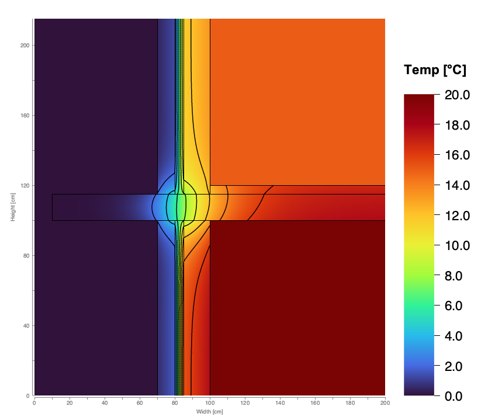
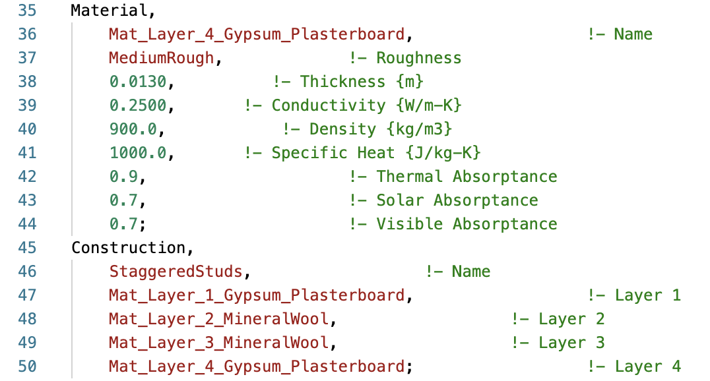
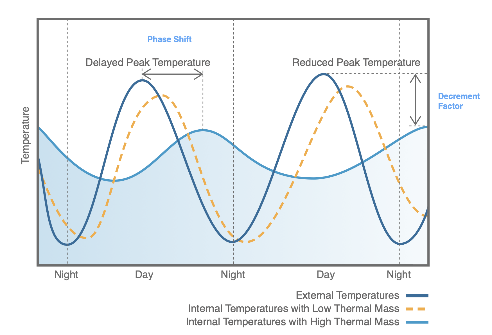

KOALAflx
KOALA calculates two- and three-dimensional steady-state heat transfer in building envelope assemblies. The standalone editor and Rhino plugin support building science research and teaching, architectural detailing, and engineering assessment.


Thermal analysis of layered constructions
Define homogeneous layers, timber or steel studs, profiles and partially filled cavities in a construction table. The two-dimensional calculation resolves heat flow through the layer arrangement and framing, with results for comparison to the simplified estimate.
- Calculated U-value including thermal bridging, with a parallel-path estimate for comparison
- Temperature and heat flux fields, with steady-state vapour diffusion screening
- ISO 13786 dynamic properties: decrement factor, time shift, admittance
- EnergyPlus IDF export of an equivalent construction matched to the calculated U-value


Three-dimensional junction analysis in Rhino
Assign materials and indoor and outdoor boundary conditions to Rhino layers. KOALA discretises the assigned geometry on a graded grid to calculate heat transfer through balconies, brackets, window installations and other junctions. Layer priority determines material assignment where volumes overlap.
- Temperature, heat flux and relative humidity fields displayed as viewport slices
- Linear (Ψ) and point (χ) thermal bridges, plus Uf, Ψg, installation Ψ and Uw
- Clear-field layer tracing and EnergyPlus export matched to the calculated U-value
- Export slices and result points as Rhino geometry for use in Rhino and Grasshopper


Window frame, glazing-edge and installation assessment
The Library provides window-in-wall examples and glazing units with or without frames. Window Analysis defines the reference widths and projected outer-frame area used by each assessment. Measurements can be entered or drawn in Rhino and reviewed alongside a labelled diagram.
- Frame Uf, glazing-edge Ψg and installation Ψ for section details
- Whole-window Uw from the projected outer-frame area
- Uf and Ψg assessment of a user-modelled frame around an IGU
- Reference measurements saved with the Rhino document and included in the shared report


Rhino analysis procedure
- Model on layersOne Rhino layer per material, plus volumes for the indoor and outdoor air.
- Assign materialsPick from the library, or double-click to edit assigned properties. Layer order sets priority.
- SimulateAuto cell size, optional mesh check, cancellable progress.
- Read the resultsSlices, Ψ/χ, IDF, baked geometry and report images.
Analysis outputs


Temperature fields
Review temperature fields, isotherms and surface temperatures at framing, profiles and connections.


Heat flux
Examine heat flux distributions and the contribution of framing to overall thermal transmittance.


Condensation risk
Steady-state vapour diffusion screening (Glaser method) identifies calculated condensation conditions.

3D thermal bridges
Projecting slabs, corners and point bridges solved in 3D, with Ψ and χ values.

EnergyPlus export
Export an equivalent layered construction with the modelled thicknesses and mass, matched to the calculated U-value.

Dynamic properties
ISO 13786 decrement factor, time shift and admittance for summer comfort and thermal mass.
Download KOALA for your platform
Public Beta (Expires January 1, 2027)